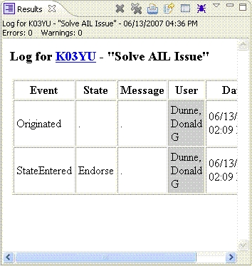

Result View

Purpose
Show reports, errors, metrics and other data in a multi-paged view with print, email and exporting capabilities.
How to do it
This view pops up automatically when OSEE needs to report larger amounts of data to the user.
Actions
Select  to print the current window.
to print the current window.
Select to email the current results view to an OSEE user.
Select  to export the current table into a comma seperated value file.
to export the current table into a comma seperated value file.
Mulit-page
Selecting the down arrow will show a list of all pages that have been displayed during the current instance
of OSEE running. Selecting from this list will display the previous page.